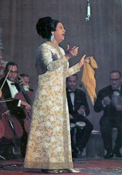
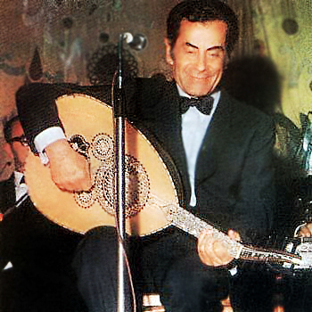

اشهر مغنين ومطربين مصر
ام كلثوم
أم كلثوم (31 ديسمبر 1898 م - 3 فبراير 1975)، اسمها الأصلي فاطمة إبراهيم البلتاجي، مطربة مصرية، اشتهرت في مصر وفي عموم العالم العربي والعالمي في القرن العشرين، ولقبت "كوكب الشرق" و"سيدة الغناء العربي". توفيت في القاهرة عن عمر يناهز 70 عاما (حسب التاريخ الرسمي لميلادها وهو 4 مايو 1904[بحاجة لمصدر]).
فريد الاطرش
ريد الأطرش (و. 19 أكتوبر 1910 - ت. 26 ديسمبر 1974) موسيقار ومطرب وعازف عود وممثل مصرى سوري درزي، ترعرع في القاهرة، ترك بصمات واضحة على الموسيقى والغناء العربي . ينحدر فريد الأطرش من آل الأطرش، وهم سلالة الأمير فخر الدين المعني التي نزحت من جنوب الجزيرة العربية إلى لبنان، وفي بداية القرن الثامن عشر الميلادي، نزح معظمهم إلى جبل حوران، حيث إستقرّوا، وكان لهم دور مهم في مقاومة الإحتلال العثماني سنة 1911م, والإحتلال الفرنسي سنة 1923م.
تامر حسني
تامر حسني مغني و ملحن و ممثل مصري ولد في القاهرة في 16 أغسطس 1977 لأب مصري و أم سورية. تخرج من كلية الإعلام في جامعة 6 أكتوبر, و بدأ مشاورة الفني خلال دراسته الجامعية فقد كان يغني بحفلات الجامعة. في إحدى الحفلات كان يغني أغنية : "قولوا لا" و صادف وجود الإعلامية سلمى الشماع والتي أعجبت به وبعدها عرفته على المنتج نصر محروس الذي اقتنع بموهبته و وقع معه عقدا. كانت أغنية " شكلي هاحبك " كانت أول اغنية تسجل له على شريط ضمن مجموعة اغاني لمطربين . بعد ذلك رشحه المنتج هو و المطربة شيرين و التي كانت قد قدمت فقط اغنية واحدة و كانت مع محمد محي " بحبك " ان هذه المطربة ستكون معه في شريط واحد بعنوان " تامر و شيرين " و فعلا صدر الشريط و حقق ارقاما قياسية بالمبيعات و الانتشار ومن ثم بزغ نجمه وتوالت البوماته الفنية وافلامه السنمائية وصل لشعبية كبيرة في وقت قصير.